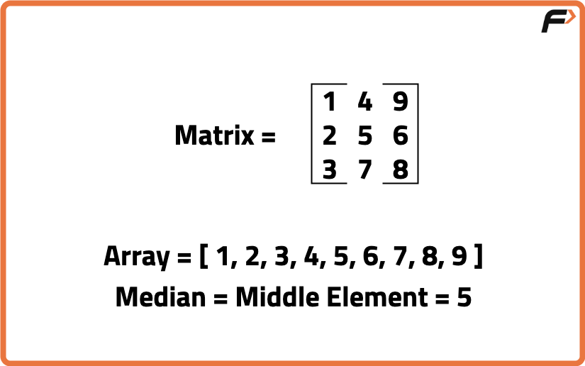
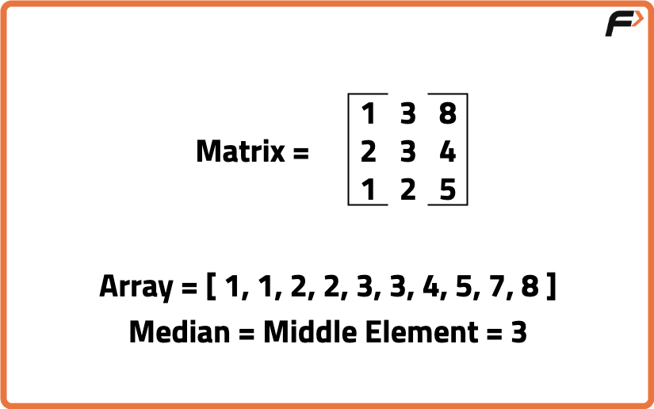
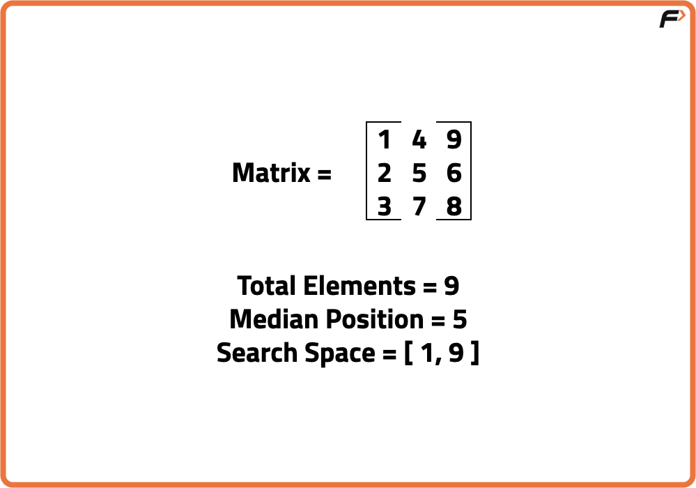
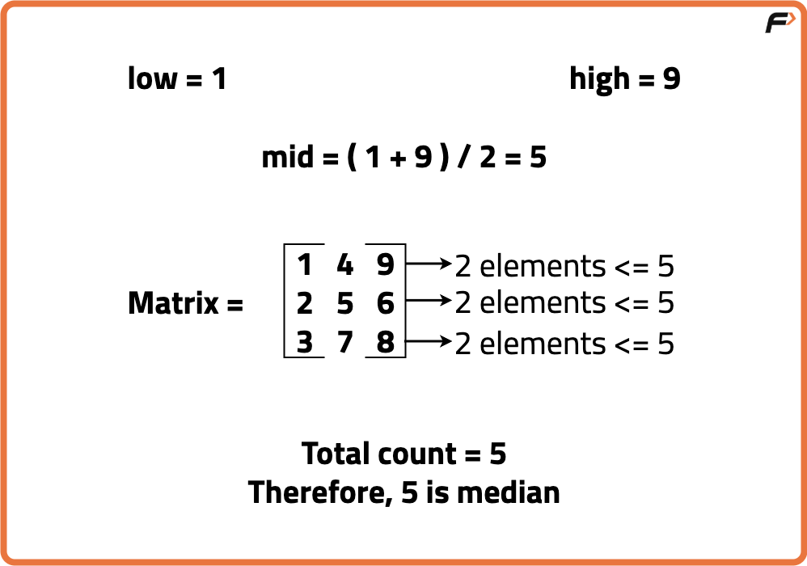

Archived from https://takeuforward.org/data-structure/median-of-row-wise-sorted-matrix/
Problem Statement: Given a row-wise sorted matrix of size M*N, where M is no. of rows and N is no.
of columns, find the median in the given matrix.
Note: M*N is odd.
Examples
Input: M = 3, N = 3, matrix[][] =
1 4 9
2 5 6
3 8 7
Output: 5Explanation:
If we find the linear sorted array, the array becomes 1 2 3 4 5 6 7 8 9. Therefore, median = 5

Input: M = 3, N = 3, matrix[][] =
1 3 8
2 3 4
1 2 5
Output: 3Explanation:
If we find the linear sorted array, the array becomes 1 1 2 2 3 3 4 5 7 8. Therefore, median = 3.

Disclaimer:
Here is the practice link to help you assess your knowledge better.
It's highly recommend trying to
solve it before looking at the solution.
Brute-Force Approach
Algorithm
The extremely naive approach is to use a linear array or list to store the elements of the given matrix and sort the list. We can return the middle element of sorted list to find the median.
Code
#include <bits/stdc++.h>
using namespace std;
class Solution {
public:
// Function to find the median of a row-wise sorted matrix
int findMedian(vector<vector<int>>& matrix) {
// Create a list to store all elements
vector<int> elements;
// Traverse each row of the matrix
for (auto& row : matrix) {
// Traverse each element in the current row
for (int val : row) {
// Add the element to the list
elements.push_back(val);
}
}
// Sort the collected elements
sort(elements.begin(), elements.end());
// Return the middle element (median)
int n = elements.size();
return elements[n / 2];
}
};
int main() {
Solution obj;
// Define the matrix
vector<vector<int>> matrix = {
{1, 3, 5},
{2, 6, 9},
{3, 6, 9}
};
// Print the median
cout << obj.findMedian(matrix) << endl;
return 0;
}
import java.util.*;
class Solution {
// Function to find the median of a row-wise sorted matrix
public int findMedian(int[][] matrix) {
// Create a list to store all elements
List<Integer> elements = new ArrayList<>();
// Traverse each row of the matrix
for (int[] row : matrix) {
// Traverse each element in the current row
for (int val : row) {
// Add element to list
elements.add(val);
}
}
// Sort the list of elements
Collections.sort(elements);
// Return the middle element (median)
int n = elements.size();
return elements.get(n / 2);
}
}
public class Main {
public static void main(String[] args) {
Solution obj = new Solution();
// Define the matrix
int[][] matrix = {
{1, 3, 5},
{2, 6, 9},
{3, 6, 9}
};
// Print the median
System.out.println(obj.findMedian(matrix));
}
}
class Solution:
def findMedian(self, matrix):
# Create a list to store all elements
elements = []
# Traverse each row
for row in matrix:
# Traverse each value in the row
for val in row:
# Add value to list
elements.append(val)
# Sort all collected elements
elements.sort()
# Return the middle value (median)
return elements[len(elements) // 2]
# Driver code
matrix = [
[1, 3, 5],
[2, 6, 9],
[3, 6, 9]
]
obj = Solution()
print(obj.findMedian(matrix))
class Solution {
findMedian(matrix) {
// Create an array to store all values
let elements = [];
// Traverse every row
for (let row of matrix) {
// Traverse every value in the row
for (let val of row) {
// Add value to the list
elements.push(val);
}
}
// Sort the array of elements
elements.sort((a, b) => a - b);
// Return the middle element (median)
return elements[Math.floor(elements.length / 2)];
}
}
// Driver code
const matrix = [
[1, 3, 5],
[2, 6, 9],
[3, 6, 9]
];
const obj = new Solution();
console.log(obj.findMedian(matrix));
Complexity Analysis
Time Complexity: O(M*N*(log(M*N))), sorting the linear array takes time complexity of O(M*N(logM*N)). Space Complexity: O(M*N), to create a linear array.
Optimal Approach
Algorithm
In a row-wise sorted matrix, each row is individually sorted, but the entire matrix isn’t globally sorted. Hence, we can’t just pick the middle element directly to get the median. If we flatten and sort the entire matrix, it would take O(N×M log(N×M)) time, which is inefficient. Instead, we can take advantage of the sorted rows and apply a more optimized method using binary search on the value space (i.e., the range of possible numbers in the matrix).
We start by finding the minimum and maximum elements in the matrix. The smallest element will be in the first column, and the largest element will be in the last column. We then binary search between this range to find the median value.
In each iteration of the binary search, we choose a middle value and count how many elements in the matrix are less than or equal to it. Since each row is sorted, we can do this efficiently using binary search (upper bound) on each row. If the count is less than or equal to half of the total number of elements, we move our search range to the right, otherwise, we move it to the left.


Code
#include <bits/stdc++.h>
using namespace std;
class Solution {
public:
// Function to count elements less than or equal to mid in a row
int countLessEqual(vector<int>& row, int mid) {
// Using upper_bound to find count efficiently
return upper_bound(row.begin(), row.end(), mid) - row.begin();
}
// Function to find median
int findMedian(vector<vector<int>>& matrix) {
// Number of rows and columns
int rows = matrix.size();
int cols = matrix[0].size();
// Minimum possible element in matrix
int low = matrix[0][0];
// Maximum possible element in matrix
int high = matrix[0][cols - 1];
for (int i = 1; i < rows; i++) {
low = min(low, matrix[i][0]);
high = max(high, matrix[i][cols - 1]);
}
// Binary search over the value range
while (low < high) {
int mid = (low + high) / 2;
// Count elements ≤ mid
int count = 0;
for (int i = 0; i < rows; i++) {
count += countLessEqual(matrix[i], mid);
}
// If count is less than half, median is greater
if (count < (rows * cols + 1) / 2)
low = mid + 1;
else
high = mid;
}
// Final low is the median
return low;
}
};
int main() {
Solution obj;
vector<vector<int>> matrix = {
{1, 3, 5},
{2, 6, 9},
{3, 6, 9}
};
cout << "Median: " << obj.findMedian(matrix) << endl;
return 0;
}
import java.util.*;
class Solution {
// Function to count elements less than or equal to mid in a row
int countLessEqual(int[] row, int mid) {
// Binary search in row
int low = 0, high = row.length;
while (low < high) {
int m = (low + high) / 2;
if (row[m] <= mid) low = m + 1;
else high = m;
}
return low;
}
// Function to find the median
int findMedian(int[][] matrix) {
int rows = matrix.length;
int cols = matrix[0].length;
// Initialize low and high values
int low = matrix[0][0];
int high = matrix[0][cols - 1];
for (int i = 1; i < rows; i++) {
low = Math.min(low, matrix[i][0]);
high = Math.max(high, matrix[i][cols - 1]);
}
// Binary search in value range
while (low < high) {
int mid = (low + high) / 2;
int count = 0;
// Count number of elements ≤ mid
for (int i = 0; i < rows; i++) {
count += countLessEqual(matrix[i], mid);
}
if (count < (rows * cols + 1) / 2)
low = mid + 1;
else
high = mid;
}
// Return the median
return low;
}
public static void main(String[] args) {
Solution obj = new Solution();
int[][] matrix = {
{1, 3, 5},
{2, 6, 9},
{3, 6, 9}
};
System.out.println("Median: " + obj.findMedian(matrix));
}
}
import bisect
class Solution:
# Function to count elements <= mid using bisect
def countLessEqual(self, row, mid):
return bisect.bisect_right(row, mid)
# Function to find median
def findMedian(self, matrix):
rows = len(matrix)
cols = len(matrix[0])
# Get the smallest and largest elements
low = min(row[0] for row in matrix)
high = max(row[-1] for row in matrix)
# Binary search on value space
while low < high:
mid = (low + high) // 2
count = 0
# Count elements ≤ mid
for row in matrix:
count += self.countLessEqual(row, mid)
if count < (rows * cols + 1) // 2:
low = mid + 1
else:
high = mid
return low
# Driver code
matrix = [
[1, 3, 5],
[2, 6, 9],
[3, 6, 9]
]
obj = Solution()
print("Median:", obj.findMedian(matrix))
class Solution {
// Function to count number of elements ≤ mid in a row
countLessEqual(row, mid) {
let low = 0, high = row.length;
while (low < high) {
let m = Math.floor((low + high) / 2);
if (row[m] <= mid) low = m + 1;
else high = m;
}
return low;
}
// Function to find median
findMedian(matrix) {
let rows = matrix.length;
let cols = matrix[0].length;
// Find global min and max
let low = matrix[0][0];
let high = matrix[0][cols - 1];
for (let i = 1; i < rows; i++) {
low = Math.min(low, matrix[i][0]);
high = Math.max(high, matrix[i][cols - 1]);
}
// Binary search on value space
while (low < high) {
let mid = Math.floor((low + high) / 2);
let count = 0;
// Count elements ≤ mid
for (let i = 0; i < rows; i++) {
count += this.countLessEqual(matrix[i], mid);
}
if (count < Math.floor((rows * cols + 1) / 2))
low = mid + 1;
else
high = mid;
}
return low;
}
}
// Driver code
const matrix = [
[1, 3, 5],
[2, 6, 9],
[3, 6, 9]
];
const obj = new Solution();
console.log("Median:", obj.findMedian(matrix));
Complexity Analysis
Time Complexity: O(rows × log(max - min) × log(cols)), Binary search runs on the value space from min to max of the matrix and for each mid in binary search, we count how many numbers are less than or equal to mid Space Complexity: O(1), constant extra space is used.